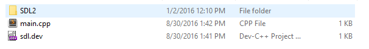
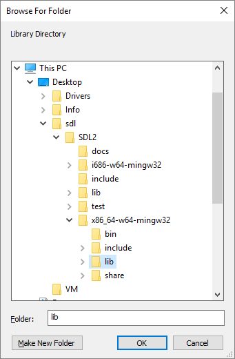
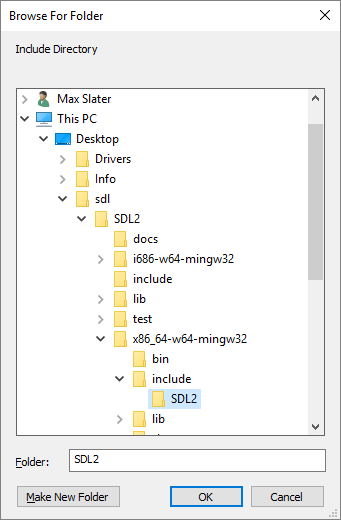
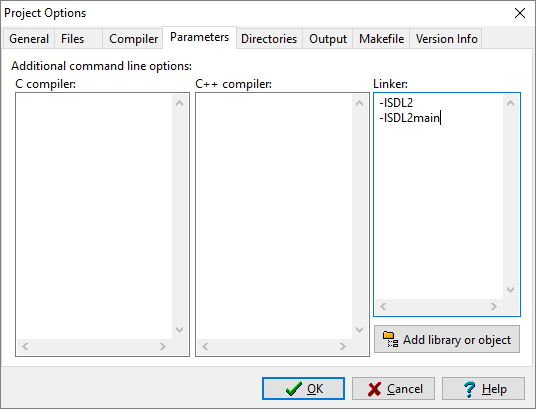
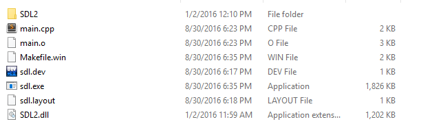

SDL Files
First, set up an empty project.
Then, download SDL. For Dev C++, download the "MinGW" development library.

Extract the files and move the folder into your project.
Project Settings
Open up your project and right click or press CRTL + H to open the project options window. Go to the directories tab.

Click on the folder icon in the bottom right and navigate to your SDL source folder. Go to x86_64_w64_mingw32 and select the lib folder.
Click "add" in the directories tab to add the directory. Next, move to include directories and repeat the process.
Next, go to the parameters tab. In the linker area, add "-lSDL2" and "-lSDL2main."
 You should now be done. To test, add example code for lesson 01 to your main.cpp file.Build
Assuming your project compiles, you'll notice you can't run it. It will say something along the lines of "SDL2.dll not found." To fix this, simply copy SDL2.dll to the same directory as your executable.
Find it here (remember to use the one in x86_64_w64_mingw32/bin).

Copy it to the project/executable directory. You should now be able to run your program.
